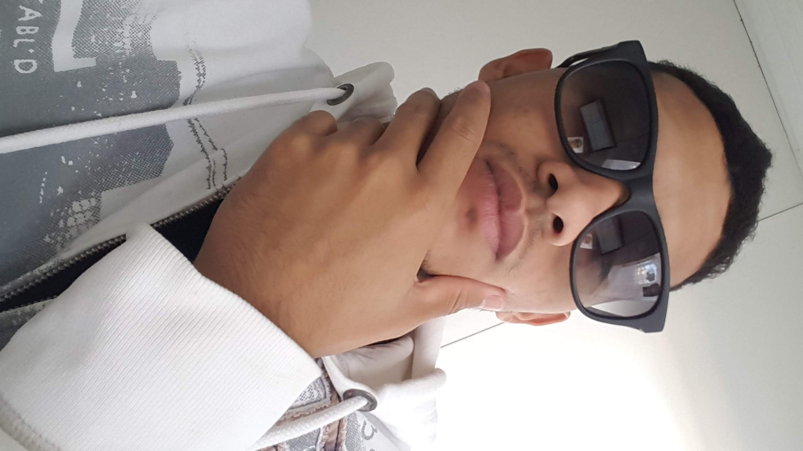

Desejo que você Não tenha medo da vida, tenha medo de não vivê-la. Não há céu sem
tempestades, nem caminhos sem acidentes. Só é digno do pódio quem usa as
derrotas para alcançá-lo. Só é digno da sabedoria quem usa as lágrimas para
irrigá-la. Os frágeis usam a força; os fortes, a inteligência. Seja um
sonhador, mas una seus sonhos com disciplina, Pois sonhos sem disciplina
produzem pessoas frustradas. Seja um debatedor de ideias. Lute pelo que você
ama.
Talvez você esteja preocupado(a) demais, desanimado com
essa ou aquela situação. Vivendo sob grande tensão. Sem saber por onde ir ou
como fazer. Pois vou lhe dar alguns motivos para melhorar. mesmo sem grandes
recursos financeiros, mesmo sem médico, sem analista e sem dor.
Inspire-se!
Leia um bom livro.
Assista a um bom filme, ou um programa
educativo na tevê. Veja uma boa peça teatral, participe. E como descobrir se o
livro, o filme, o programa ou a peça são bons? Só lendo, assistindo, vendo,
procurando… O bom do conhecimento é que ele não ocupa espaço. Podemos carregar
malas e malas de conhecimento. Sempre haverá uma língua nova para aprender.
Boas ideias não surgem do nada, surgem do que conhecemos.
Motive-se!
A
motivação vem do reconhecimento pessoal. Sabe aquela medalinha que você ganhou
no prezinho? Aquela promoção no trabalho? O elogio da sua mãe quando te viu
arrumado? Tudo é motivo para alegrar a alma. Não fique pensando no que não
tem. Agradeça pelo que já conquistou. Ainda que seja uma simples caixa de
lápis de cor. Com ela, dá para desenhar o mundo.
Apaixone-se!
Decida-se
pelo que realmente te dá prazer. Não faça grandes projetos com o que não te dá
alegria. Que adianta a bela profissão na alma vazia? Melhor ser o que aquilo
que idealizamos, que viver um sonho furado de outra pessoa. Apaixone-se pelo
seu cheiro, pela sua palavra. Coloque amor em cada gesto, em cada ato. A vida
naturalmente recompensa o amor com mais amor.
Não se compare!
Nem a nada,
nem a ninguém.
Pegue uma Biografia e use como inspiração e não como
comparação. Você é peça única!
Acredite.
Se você é ateu, acredite no seu
poder de realizar. Se tem religião, ou simpatia por uma, acredite no seu
“Deus”, mas não deixe de criar. Não espere que uma oração vá fazer o que
precisa ser feito. A carne em cima da mesa não vai ficar pronta com a sua fé,
mas ela pode temperar ainda mais o alimento com a determinação. Acreditar é
ter o poder de transformar o que parece impossível.
Respeite-se!
Quando
encontramos um lugar muito limpo, seja onde for, não jogamos papel no chão, e
cuidamos de não sujar o recinto. A limpeza por si só já exige respeito, nem
precisa de vigia. Assim também deve ser a sua apresentação. Limpa, serena e a
ao mesmo tempo forte e determinada. Não apareça com cara de fraqueza, de
“coitadinho”. Quanto mais coitadinho, mais as pessoas pisam.
Admita os
erros!
Errou? Peça desculpas e recomece. Nâo fique procurando desculpas e nem
culpados. Seja humilde para reconhcer uma falha. Aprenda com os erros e
recomece com mais certeza. O erro é uma forma de ensino poderosa.
Tenha
sonhos para realizar!
A vida sem sonhos, sejam eles pequenos ou enormes, não
tem a menor graça. Por isso, a cada nova conquista, coloque uma nova meta.
Trace planos para o dia, para a semana, este mês. para este ano e os próximos
10 anos.
Movimente-se!
Ficar parado é enferrujar a alma, o corpo e a
mente. Saia de casa, caminhe. Troque o elevador e escadas rolantes pelas
escadas. Faça algum trabalho braçal, varra o quintal. Mexa-se, pois até as
pedras rolam.
Cultive a paz!
A vida já é tão difícil e cheia de problemas,
então, não arrume mais. Não se meta na vida dos outros. Não queira fazer por
alguém o que ela tem que fazer. Não se meta em foofocas. Não conte seus
segredos. Não queira saber de segredos dos outros. Cuide da sua vida comos e
fosse um tesouro. Revele apenas o que precisa ser revelado, o resto, deixe no
ar.